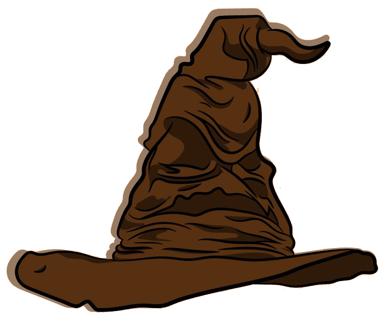

Lab 12 - Conditionals
Challenge
Restate the challenge of the lab here.
Problems
What problems arose? How did you solve them?
Reflection
Put your reflections about this assignment here. How did it go? What kind of energy did you put into the assignment?
Results
Prepare To Receive Your Personality Trait! You Will Receive a Combination of Two Hogwarts' Houses! What Fun!
House Information

Here are the descriptions of the four houses at Hogwarts and I decide who is placed in what house. Click the houses to learn more about the
type of people, who I decided what house they belong in. Which house would you want to be placed in?
Hogwarts house descriptions, thanks to
The Wizarding World Team